Selected Recent Publications
My fifteen most recent articles. For the complete list of publications, please see my CV.
-

, Gong, Y., & Wang, Y. Assessing the Effects of Child-Care Subsidies on Fertility and Birth Outcomes: Evidence from the Child and Dependent Care Tax Credit. Review of Economics of the Household (forthcoming).
We ask how child-care subsidies delivered through the Child and Dependent Care Tax Credit affect fertility and infant health, using variation in the credit's generosity to identify their effects.
-

, & Armstrong, M. A. Not Thriving: LGBTQ+ Women in STEM Work. Journal of Women and Minorities in Science and Engineering (forthcoming).
We examine the workplace experiences of LGBTQ+ women in STEM and the structural barriers that keep them from thriving at work, extending the intersectional framework of our book Disparate Measures.
-
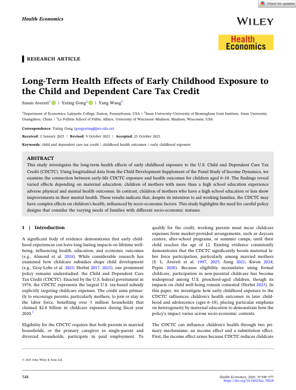
, Gong, Y., & Wang, Y. Long-Term Health Effects of Early Childhood Exposure to the Child and Dependent Care Tax Credit. Health Economics (forthcoming).
We link early-childhood exposure to the Child and Dependent Care Tax Credit to health in adulthood, finding lasting benefits from this widely used child-care subsidy.
-
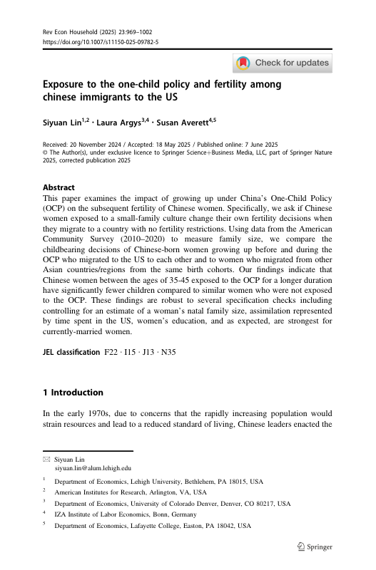
, Lin, S., & Argys, L. M. (2025). Exposure to the One-Child Policy and Fertility among Chinese Immigrants to the US. Review of Economics of the Household, 23, 969–1002.
Using variation in exposure to China's One-Child Policy, we ask how the policy shaped the fertility of Chinese immigrants to the United States, separating cultural from institutional channels.
-
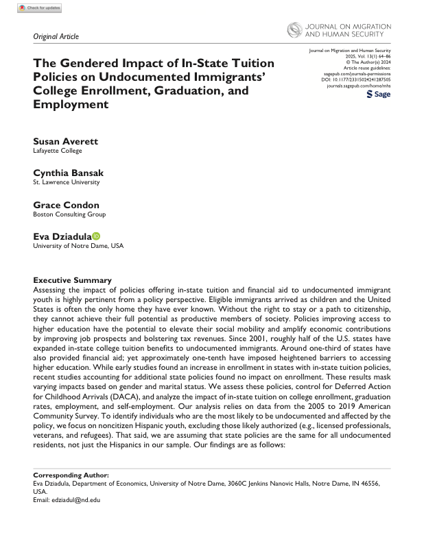
, Bansak, C., Condon, G., & Dziadula, E. (2025). The Gendered Impact of In-State Tuition Policies on Undocumented Immigrants' College Enrollment, Graduation and Employment. Journal of Migration and Human Security.
We study how state in-state tuition policies for undocumented immigrants affect college enrollment, graduation, and employment, and show the effects differ markedly by gender.
-

, Argys, L. M., & Yang, M. (2025). Living in Sync with the Sun: Sleep and Mental Health Implications of Circadian Misalignment. American Journal of Health Economics.
Exploiting variation in the gap between social and solar time, we find that circadian misalignment worsens sleep and mental health—evidence that living out of sync with the sun carries real health costs.
-
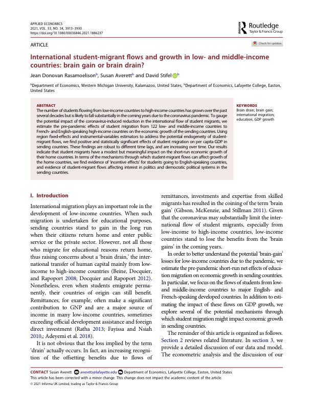
Rasamoelison, J. D., , & Stifel, D. (2021). International Student-Migrant Flows and Growth in Low- and Middle-Income Countries: Brain Gain or Brain Drain? Applied Economics, 53(34), 3913–3930.
We ask whether international student migration helps or hurts sending countries, and find that student-migrant flows are associated with stronger growth in low- and middle-income economies—evidence of brain gain rather than brain drain.
-
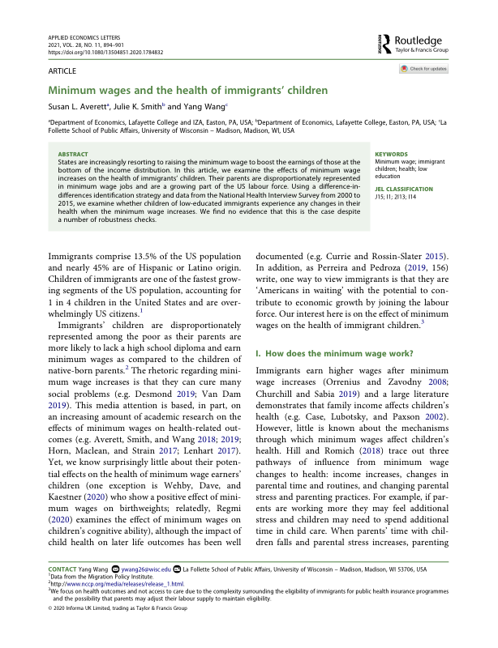
, Smith, J. K., & Wang, Y. (2021). Minimum Wages and the Health and Access to Care of Immigrants' Children. Applied Economics Letters, 28(11), 894–901.
We examine how minimum-wage increases affect the health and health-care access of immigrants' children, a group especially exposed to low-wage labor markets.
-
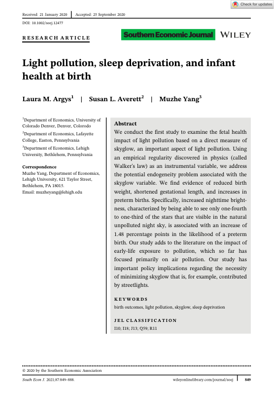
Argys, L. M., , & Yang, M. (2021). Light Pollution, Sleep Deprivation during Pregnancy, and Infant Health at Birth. Southern Economic Journal, 87, 849–888.
We link nighttime light pollution to sleep deprivation during pregnancy and worse infant health at birth, identifying a new environmental determinant of birth outcomes.
-
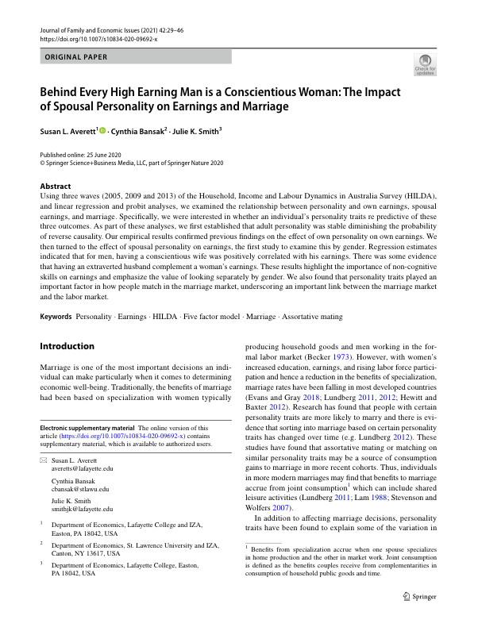
, Bansak, C., & Smith, J. K. (2021). Behind Every High Earning Man Is a Conscientious Woman. Journal of Family and Economic Issues, 42, 29–46.
We show that a spouse's personality—particularly conscientiousness—is associated with their partner's earnings, evidence that household characteristics shape labor-market success.
-
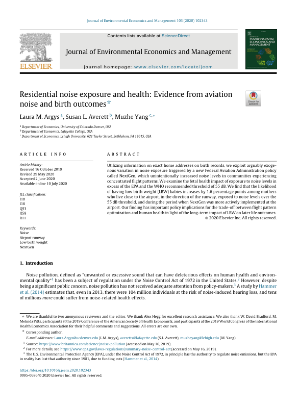
Argys, L. M., , & Yang, M. (2020). Residential Noise Exposure and Health: Evidence from Aviation Noise and Birth Outcomes. Journal of Environmental Economics and Management, 103, 102343.
Using aviation noise around airports, we estimate the effect of residential noise exposure on health and birth outcomes, isolating noise from other features of neighborhoods near airports.
-
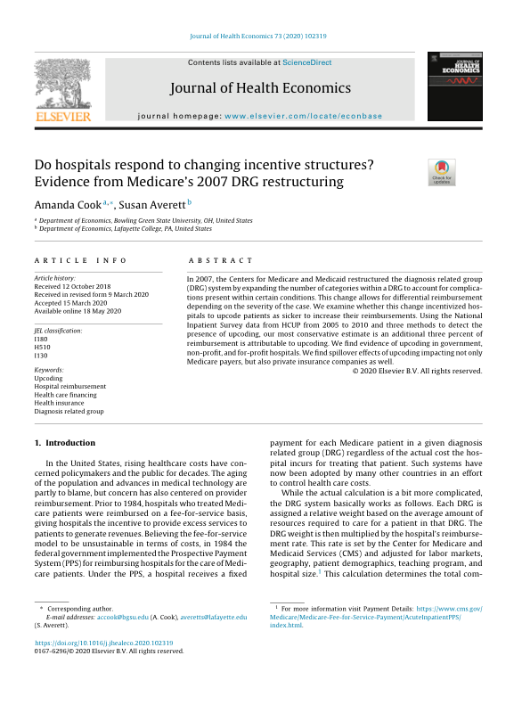
Cook, A., & (2020). Do Hospitals Respond to Changing Incentive Structures? Evidence from Medicare's 2007 DRG Methodology Change. Journal of Health Economics, 73, 102319.
Using Medicare's 2007 overhaul of how hospitals are reimbursed, we ask whether hospitals respond to changing financial incentives in the care they provide.
-
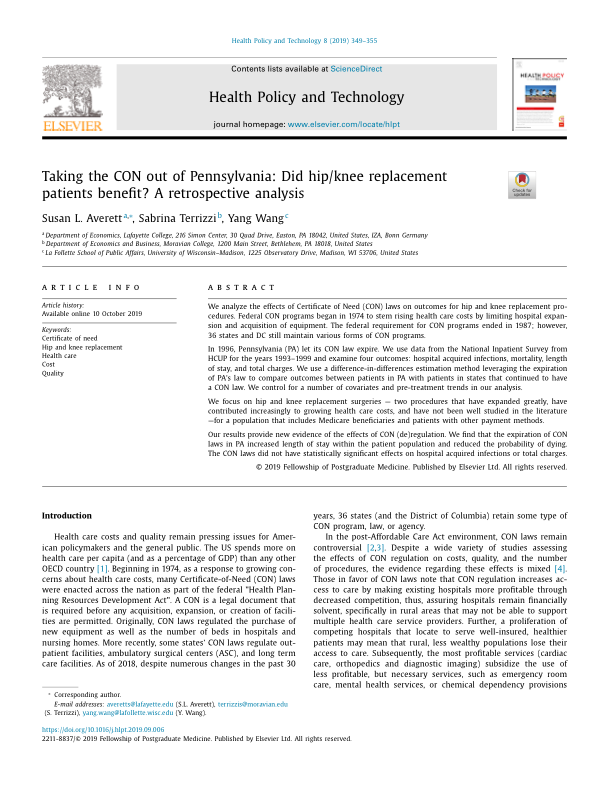
, Terrizzi, S., & Wang, Y. (2019). Taking the CON out of Pennsylvania: Did Hip/Knee Replacement Patients Benefit? A Retrospective Analysis. Health Policy and Technology, 8(4), 349–355.
We study what happened to hip and knee replacement patients after Pennsylvania repealed its Certificate-of-Need (CON) laws, asking whether deregulation improved access and outcomes.
-
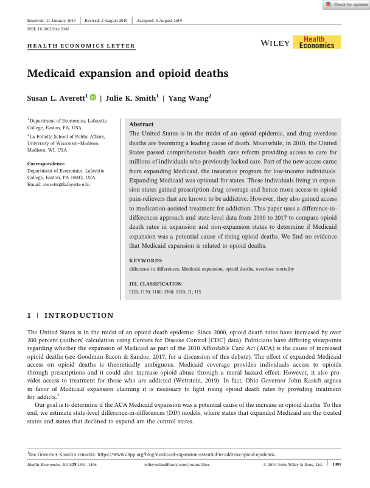
, Smith, J. K., & Wang, Y. (2019). Medicaid Expansion and Opioid Deaths. Health Economics, 28(12), 1491–1496.
We examine whether state Medicaid expansions under the ACA affected opioid-related deaths, contributing causal evidence to the debate over insurance coverage and the opioid crisis.
-
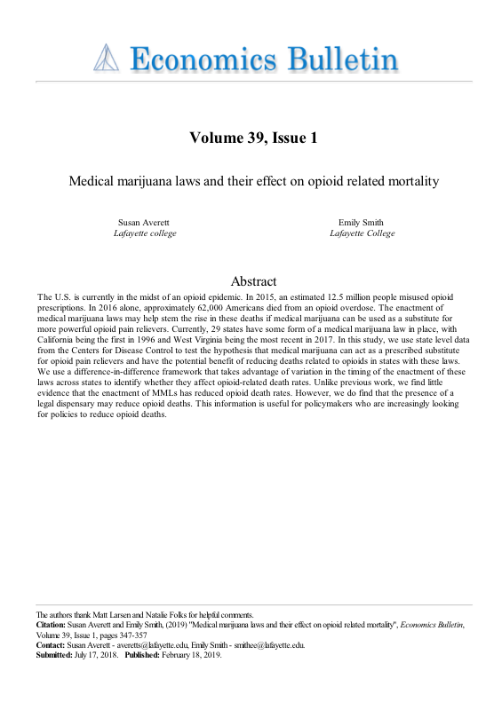
, & Smith, E. (2019). Medical Marijuana Laws and Their Effect on Opioid Related Mortality. Economics Bulletin, 39(1), A36.
We ask whether state medical-marijuana laws are associated with lower opioid-related mortality, contributing to the debate over cannabis access as a substitute for opioids.
Papers Under Review
-
When the American Dream Becomes a Nightmare, with Catalina Amuedo-Dorantes and Mehmet Yaya.
-
The Gender Wage Gap and Health, with Adam Biener and Olena Ogrokhina.
Selected Work in Progress
-
Medicaid Expansion and Financial Behavior, with Julie K. Smith.
-
Excess Emissions and the Incidence of Low Birth Weight: Evidence from Texas, with Sayorn Chin.
-
Vietnam Veterans and Covid Death Rates, with Matt Larsen.
-
Born to Compete? The Role of Sibling Gender Composition and Athletic Performance in the WNBA, with Olena Ogrokhina.
-
The Mental Health Impacts of Fatal School Shooting, with Laura M. Argys and Xiaoyan Zhang.